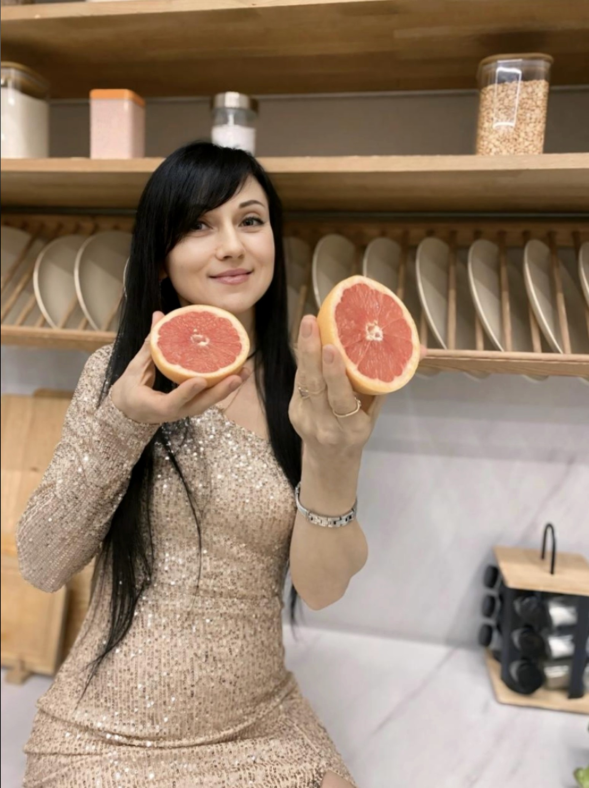

Помогаю выстроить понятную систему питания, разобраться в вопросах добавок и анализов и сформировать устойчивые привычки без крайностей.
Здоровье — это энергия, самочувствие, питание, сон и ежедневные привычки. Работа строится комплексно и последовательно.
Обсудим запрос, привычки и подходящий формат дальнейшей работы.